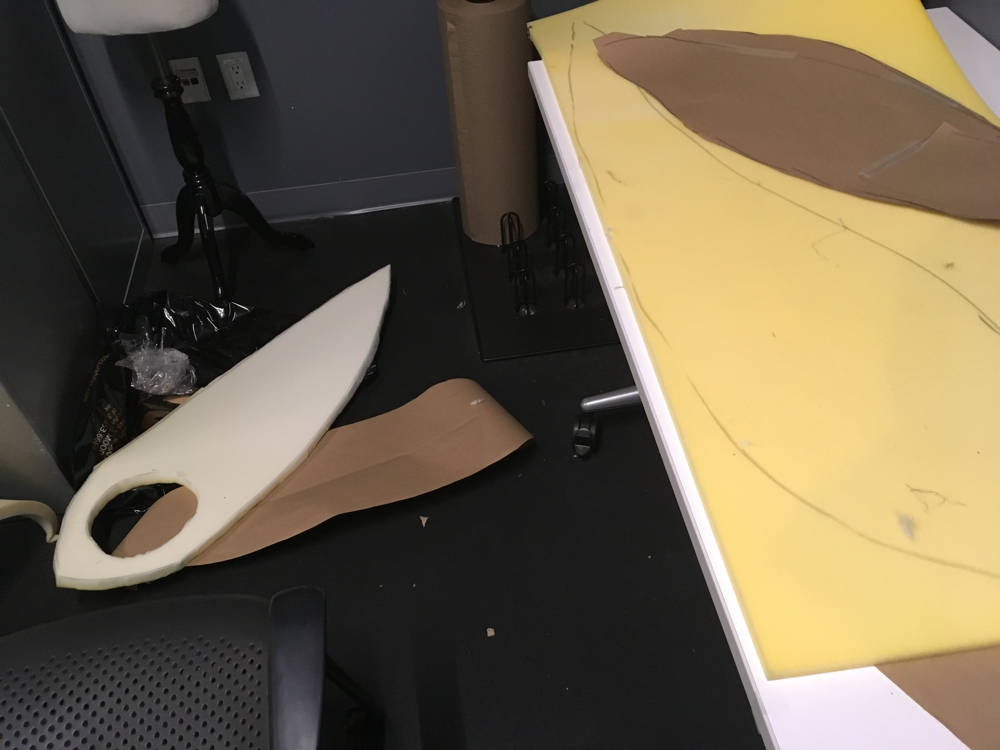
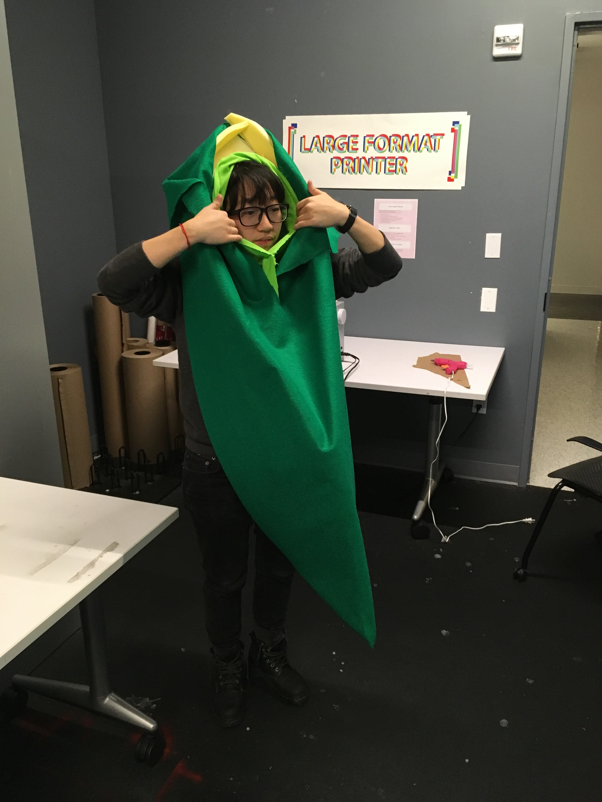
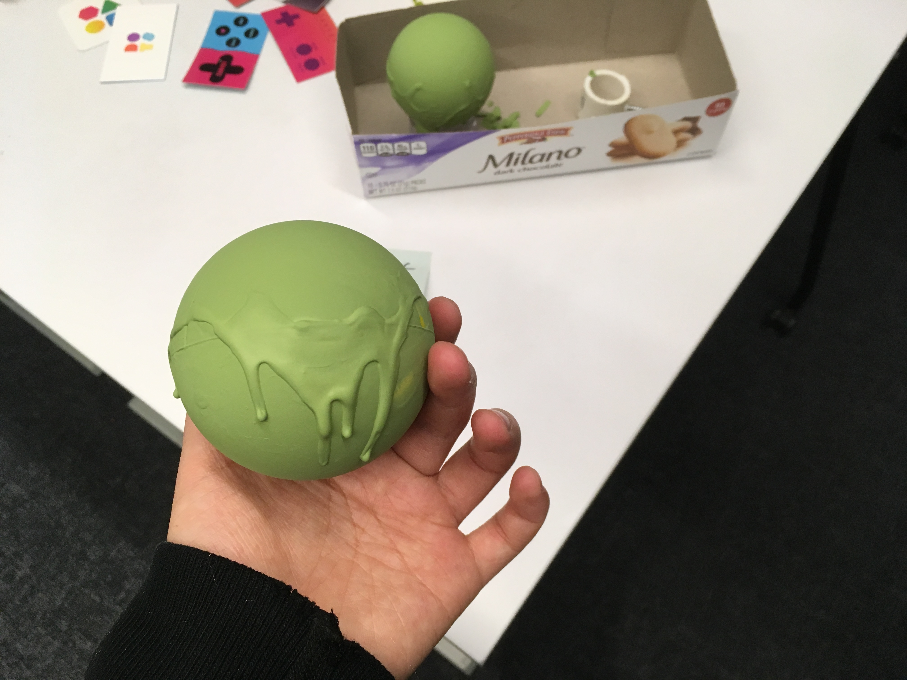
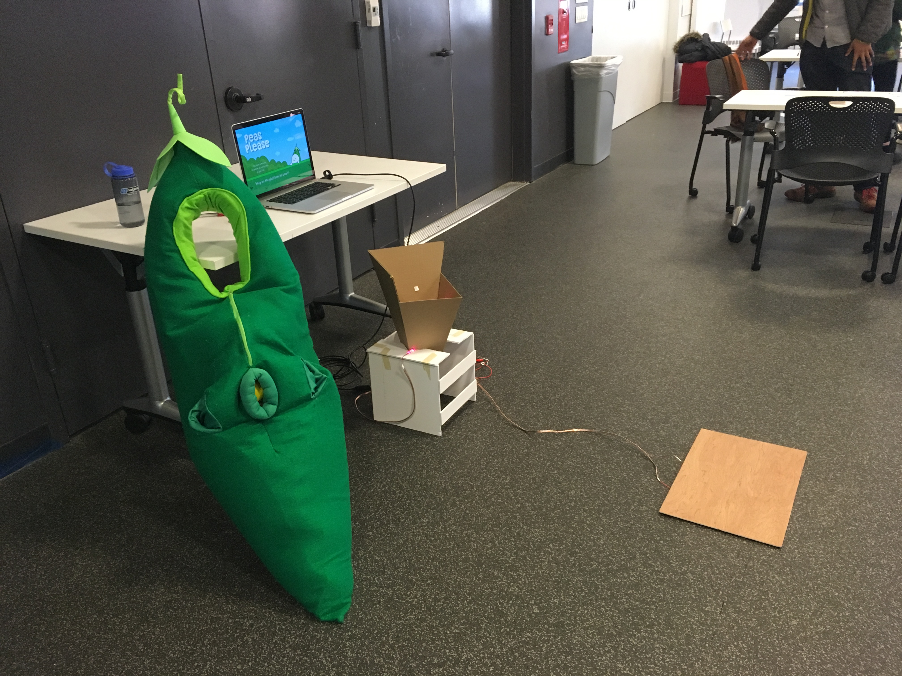

First are sketches of the initial concept (drawn in a bar, of course), inspired by kangaroo pouches. This evolved into the pouch squeezing mechanic that the game is now.
After getting the idea and sketches down, I started working on the costume. I spent a while thinking about the silhouette of the costume and how to best achieve it. I wanted the pod to rest against the body but still maintain the familiar crescent shape, which was tough.

I used upholstery foam to get the structure, since I wanted that to be pretty stable...

then covered it in green. I added more foam around the head, so that you can actually support it with the top of your head instead of it going around your neck, and so the head hole didn't close off.

I opened the front and sewed a bag to the inside, where I put the balls. Then I closed it using safety pins, so I could test placement and the feel of the costume. I made the hole using a tube of spandex and then stuffing it, so you have to squeeze things through it.
I did a lot of the sewing by hand, since I was testing and improvising with the material with the foam inside already. I tried several different hole sizes and stuffed lining sizes, and different hole placements. I also added pockets to the side so players could get better access to the peas in the costume, instead of feeling them through the foam on the outside.
For the peas, I also went through several ideas. For a while, I thought I might sew them, but sewing nice spheres proved really difficult. I bought a couple of different types of balls, and found that stress balls worked well. Emoji stress balls were cheap, so I ended up with a bunch of those.

I tried painting them by dipping them into acrylic, but when they bounced on the floor the paint would crack. I tried coating them in liquid latex, but then they weren't slippery enough to squeeze out. In the end, I caved and just bought plain green stress balls from a supplier. I now have about 3x as many as I need, but they're the perfect color and consistency.

Here's the game now! The box/basket and platform still need some work but the costume is pretty much finalized.